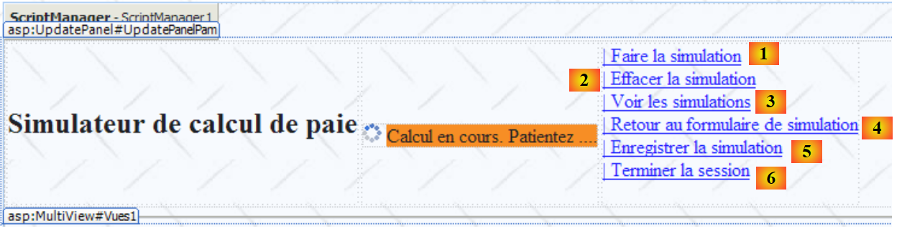
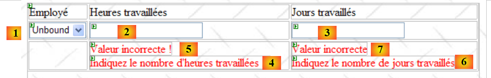
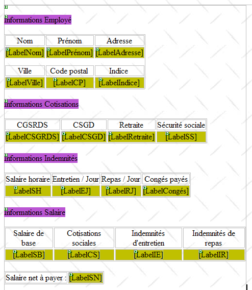

8. La aplicación [SimuPaie] – versión 4 – ASP.NET / multivista / página única
Lectura recomendada: referencia [1], Desarrollo web con ASP.NET 1.1, secciones:
-
Componentes de servidor y controladores de aplicaciones
-
Ejemplos de aplicaciones MVC con componentes de servidor ASP
Ahora examinaremos una versión derivada de la aplicación ASP.NET de tres capas comentada anteriormente, a la que se le han añadido nuevas características. La arquitectura de nuestra aplicación evoluciona de la siguiente manera:
 |
El procesamiento de una solicitud del cliente se lleva a cabo de la siguiente manera:
- El cliente envía una solicitud a la aplicación.
- La aplicación procesa esta solicitud. Para ello, puede necesitar la ayuda de la capa [de negocio], que a su vez puede necesitar la capa [DAO] si es necesario intercambiar datos con la base de datos. La aplicación recibe una respuesta de la capa [de negocio].
- Basándose en esta respuesta, selecciona (3) la vista (= la respuesta) que se enviará al cliente, proporcionándole (4) la información (el modelo) que necesita.
- La respuesta se envía al cliente (5)
Esta es una arquitectura web conocida como MVC (Modelo-Vista-Controlador):
- [Aplicación] es el controlador. Gestiona todas las solicitudes del cliente.
- [Entradas, Simulación, Simulaciones, ...] son las vistas. Una vista en .NET es código ASP/HTML estándar que contiene componentes que deben inicializarse. Los valores que deben proporcionarse a estos componentes forman el modelo de la vista.
Aquí implementaremos el patrón de diseño MVC de la siguiente manera:
- las vistas serán componentes [View] dentro de una única página [Default.aspx]
- el controlador es, por tanto, el código [Default.aspx.cs] de esta página única.
Solo las aplicaciones básicas pueden admitir esta implementación MVC. De hecho, con cada solicitud, se instancian todos los componentes de la página [Default.aspx], es decir, todas las vistas. Al enviar la respuesta, el código de control de la aplicación selecciona una de ellas simplemente haciendo visible el componente [View] correspondiente y ocultando los demás. Si la aplicación tiene muchas vistas, la página [Default.aspx] tendrá muchos componentes, y el coste de instanciarlos puede llegar a ser prohibitivo. Además, el modo [Design] de la página puede volverse inmanejable debido a que hay demasiadas vistas. Este tipo de arquitectura es adecuada para aplicaciones con pocas vistas y desarrolladas por una sola persona. Cuando se puede adoptar, permite desarrollar una arquitectura MVC de forma muy sencilla. Esto es lo que exploraremos en esta nueva versión.
8.1. Las vistas de la aplicación
Las diferentes vistas que se presentarán al usuario serán las siguientes:
- la vista [VueSaisies], que muestra el formulario de simulación

- la vista [VueSimulation], utilizada para mostrar los resultados detallados de la simulación:

- la vista [VueSimulations], que enumera las simulaciones realizadas por el cliente

- la vista [EmptySimulationsView], que indica que el cliente no tiene simulaciones o que ya no hay más simulaciones:

- la vista [ErrorView], que indica uno o más errores:

8.2. El proyecto de Visual Web Developer para la capa [web]
El proyecto de Visual Web Developer para la capa [web] es el siguiente:
 |
- en [1] encontramos:
- el archivo de configuración de la aplicación [Web.config] – es idéntico al de la aplicación anterior.
- el archivo [Global.cs], que gestiona los eventos de la aplicación web —en este caso, su inicio—, es idéntico al de la aplicación anterior, salvo que también gestiona el inicio de la sesión de usuario.
- el formulario [Default.aspx] de la aplicación contiene las distintas vistas de la aplicación.
- En [2] se encuentran las referencias del proyecto; son idénticas a las de la versión anterior
8.3. El archivo [Global.cs]
El archivo [Global.cs], que gestiona los eventos de la aplicación web, es idéntico al de la aplicación anterior, salvo que también gestiona el inicio de la sesión de usuario:
Global.cs
using System;
using System.Web;
using Pam.Dao.Entites;
using Pam.Metier.Service;
using Spring.Context.Support;
using System.Collections.Generic;
using istia.st.pam.web;
namespace pam_v4
{
public class Global : HttpApplication
{
// --- static application data ---
public static Employe[] Employes;
public static string Msg = string.Empty;
public static bool Erreur = false;
public static IPamMetier PamMetier = null;
// application startup
public void Application_Start(object sender, EventArgs e)
{
...
}
// start user session
public void Session_Start(object sender, EventArgs e)
{
// put an empty simulation list in the session
Session["simulations"] = new List<Simulation>();
}
}
}
- Líneas 27–34: Gestionamos el inicio de la sesión. Colocaremos la lista de simulaciones realizadas por el usuario en esta sesión.
- línea 30: Se crea una lista vacía de simulaciones. Una simulación es un objeto de tipo [Simulation], que describiremos en detalle en breve.
- Línea 31: la lista de simulaciones se coloca en la sesión asociada a la clave «simulations»
8.4. La clase [Simulation]
Un objeto de tipo [Simulation] se utiliza para encapsular una fila de la tabla de simulación:
Su código es el siguiente:
namespace Pam.Web
{
public class Simulation
{
// simulation data
public string Nom { get; set; }
public string Prenom { get; set; }
public double HeuresTravaillees { get; set; }
public int JoursTravailles { get; set; }
public double SalaireBase { get; set; }
public double Indemnites { get; set; }
public double CotisationsSociales { get; set; }
public double SalaireNet { get; set; }
// manufacturers
public Simulation()
{
}
public Simulation(string nom, string prenom, double heuresTravailllees, int joursTravailles, double salaireBase, double indemnites, double cotisationsSociales, double salaireNet)
{
{
this.Nom = nom;
this.Prenom = prenom;
this.HeuresTravaillees = heuresTravailllees;
this.JoursTravailles = joursTravailles;
this.SalaireBase = salaireBase;
this.Indemnites = indemnites;
this.CotisationsSociales = cotisationsSociales;
this.SalaireNet = salaireNet;
}
}
}
}
Los campos de la clase se corresponden con las columnas de la tabla de simulación.
8.5. La página [Default.aspx]
8.5.1. Descripción general
La página [Default.aspx] contiene varios componentes [View], uno para cada vista. Su estructura básica es la siguiente:
<%@ Page Language="C#" AutoEventWireup="true" CodeFile="Default.aspx.cs" Inherits="pam_v4.PagePam" %>
<!DOCTYPE html PUBLIC "-//W3C//DTD XHTML 1.0 Transitional//EN" "http://www.w3.org/TR/xhtml1/DTD/xhtml1-transitional.dtd">
<html xmlns="http://www.w3.org/1999/xhtml">
<head id="Head1" runat="server">
<title>Simulateur de paie</title>
</head>
<body background="ressources/standard.jpg">
<form id="form1" runat="server">
<asp:ScriptManager ID="ScriptManager1" runat="server" EnablePartialRendering="true" />
<asp:UpdatePanel runat="server" ID="UpdatePanelPam" UpdateMode="Conditional">
<ContentTemplate>
<table>
<tr>
<td>
<h2>
Simulateur de calcul de paie</h2>
</td>
<td>
<label>
 </label>
<asp:UpdateProgress ID="UpdateProgress1" runat="server">
<ProgressTemplate>
<img src="images/indicator.gif" />
<asp:Label ID="Label5" runat="server" BackColor="#FF8000"
EnableViewState="False" Text="Calcul en cours. Patientez ....">
</asp:Label>
</ProgressTemplate>
</asp:UpdateProgress>
</td>
<td>
<asp:LinkButton ID="LinkButtonFaireSimulation" runat="server"
CausesValidation="False" OnClick="LinkButtonFaireSimulation_Click">
| Faire la simulation<br /></asp:LinkButton>
<asp:LinkButton ID="LinkButtonEffacerSimulation" runat="server"
CausesValidation="False" OnClick="LinkButtonEffacerSimulation_Click">
| Effacer la simulation<br /></asp:LinkButton>
<asp:LinkButton ID="LinkButtonVoirSimulations" runat="server"
CausesValidation="False" OnClick="LinkButtonVoirSimulations_Click">
| Voir les simulations<br /></asp:LinkButton>
<asp:LinkButton ID="LinkButtonFormulaireSimulation" runat="server"
CausesValidation="False" OnClick="LinkButtonFormulaireSimulation_Click">
| Retour au formulaire de simulation<br /></asp:LinkButton>
<asp:LinkButton ID="LinkButtonEnregistrerSimulation" runat="server"
CausesValidation="False" OnClick="LinkButtonEnregistrerSimulation_Click">
| Enregistrer la simulation<br /></asp:LinkButton>
<asp:LinkButton ID="LinkButtonTerminerSession" runat="server"
CausesValidation="False" OnClick="LinkButtonTerminerSession_Click">
| Terminer la session<br /></asp:LinkButton>
</td>
</table>
<hr />
<asp:MultiView ID="Vues1" ActiveViewIndex="0" runat="server">
<asp:View ID="VueSaisies" runat="server">
...
</asp:View>
</asp:MultiView>
<asp:MultiView ID="Vues2" runat="server">
<asp:View ID="VueSimulation" runat="server">
...
</asp:View>
<asp:View ID="VueSimulations" runat="server">
...
</asp:View>
<asp:View ID="VueSimulationsVides" runat="server">
...
</asp:View>
<asp:View ID="VueErreurs" runat="server">
...
</asp:View>
</asp:MultiView>
</ContentTemplate>
</asp:UpdatePanel>
</form>
</body>
</html>
- Línea 10: la etiqueta para habilitar las extensiones Ajax
- líneas 11–73: el contenedor UpdatePanel actualizado por llamadas Ajax
- líneas 12–72: el contenido del UpdatePanel
- líneas 13–52: el encabezado que aparecerá en cada vista. Presenta al usuario una lista de posibles acciones en forma de lista de enlaces.
- Línea 33: Obsérvese el atributo CausesValidation="False", que garantiza que los validadores de la página no se ejecutarán implícitamente al hacer clic en el enlace. Cuando se omite este atributo, su valor por defecto es True. La validación de la página se puede realizar explícitamente en el código del lado del servidor utilizando la operación Page.Validate.
- Líneas 53–57: Un componente [MultiView] con una única vista [VueSaisies]. Por este motivo, el número de vista que se va a mostrar se ha codificado de forma fija en la línea 53: ActiveViewIndex="0"
- Líneas 53-67: un componente [MultiView] con cuatro vistas: la vista [VueSimulation] (líneas 59-61), la vista [VueSimulations] (líneas 62-64), la vista [VueSimulationsVides] (líneas 65-67) y la vista [VueErreurs] (líneas 68-70). Un componente [MultiView] muestra solo una vista a la vez. Para mostrar la vista n.º i del componente Vues2, escribe el siguiente código:
8.5.2. El encabezado en
El encabezado consta de los siguientes componentes:
 |
N.º | Tipo | Nombre | Función |
Botón de enlace | LinkButtonRunSimulation | solicita el cálculo de la simulación | |
Botón de enlace | LinkButtonClearSimulation | borra el formulario de entrada | |
Botón de enlace | LinkButtonViewSimulations | muestra la lista de simulaciones ya realizadas | |
Botón de enlace | LinkButtonSimulationForm | vuelve al formulario de entrada | |
Botón de enlace | LinkButtonSaveSimulation | guarda la simulación actual en la lista de simulaciones | |
Botón de enlace | LinkButtonEndSession | finaliza la sesión actual |
8.5.3. La vista [ Saisies]
El componente [View] denominado [VueSaisies] es el siguiente:
 |
N.º | Tipo | Nombre | Función |
Lista desplegable | Combinado de empleados | Contiene la lista de nombres de empleados | |
Cuadro de texto | Cuadro de texto Horas | Número de horas trabajadas: número real | |
Cuadro de texto | TextBoxDays | Número de días trabajados – entero | |
Validador de campo obligatorio | Validador de campo obligatorioHoras | comprueba que el campo [2] [TextBoxHours] no esté vacío | |
Validador de expresiones regulares | Validador de expresión regular de horas | comprueba que el campo [2] [TextBoxHours] sea un número real >=0 | |
Validador de campo obligatorio | Validador de campo obligatorio para días | comprueba que el campo [3] [TextBoxDays] no esté vacío | |
Validador de expresión regular | RegularExpressionValidatorDays | comprueba que el campo [3] [TextBoxDays] sea un número entero >=0 |
8.5.4. La vista [Simulac e activada]
El componente [View] denominado [SimulationView] es el siguiente:

Se compone únicamente de componentes [Label] cuyos ID se enumeran más arriba.
8.5.5. La vista [Simu lations]
El componente [View] denominado [SimulationView] es el siguiente:
 |
N.º | Tipo | Nombre | Función |
GridView | GridViewSimulations | Contiene la lista de simulaciones |
Las propiedades del componente [GridViewSimulations] se han definido de la siguiente manera:
 |
- en [1]: haz clic con el botón derecho del ratón en la opción [GridView] / [AutoFormat]
- en [2]: elija un tipo de visualización para [GridView]
 |
- en [3]: selecciona las propiedades de [GridView]
- en [4]: edita las columnas de [GridView]
- en [5]: añada una columna [BoundField] que se vinculará a una de las propiedades públicas del objeto que se mostrará en la fila de [GridView]. El objeto que se mostrará aquí será un objeto [Simulation].
 |
- en [6]: introduzca el título de la columna
- en [7]: especifique el nombre de la propiedad de la clase [Simulation] que se asociará a esta columna.
- [DataFormatString] especifica cómo deben formatearse los valores que se muestran en la columna.
Las columnas del componente [GridViewSimulations] tienen las siguientes propiedades:
N.º | Características |
Tipo: Campo vinculado, Texto de encabezado: Nombre, Campo de datos: Nombre | |
Tipo: Campo vinculado, Texto del encabezado: Apellidos, Campo de datos: Apellidos | |
Tipo: Campo vinculado, Texto del encabezado: Horas trabajadas, Campo de datos: HorasTrabajadas | |
Tipo: Campo vinculado, Texto del encabezado: Días trabajados, Campo de datos: DíasTrabajados | |
Tipo: Campo vinculado, Texto del encabezado: Salario base, Campo de datos: SalarioBase, Cadena de formato de datos: {0:C} (formato de moneda, C = Moneda) – mostrará el símbolo del euro. | |
Tipo: Campo vinculado, Texto del encabezado: Complementos, Campo de datos: Indemnites, Cadena de formato de datos: {0:C} | |
Tipo: Campo vinculado, Texto del encabezado: Cotizaciones a la Seguridad Social, Campo de datos: Cotizaciones a la Seguridad Social, Cadena de formato de datos: {0:C} | |
Tipo: Campo vinculado, Texto del encabezado: Salario neto, Campo de datos: SalarioNet, Cadena de formato de datos: {0:C} |
Tenga en cuenta que [DataField] debe corresponder a una propiedad existente de la clase [Simulation]. Al final de esta fase, se han creado todas las columnas de tipo [BoundField]:
 |
- en [1]: las columnas creadas para [GridView]
- en [2]: la generación automática de columnas debe desactivarse cuando el desarrollador las define manualmente, como acabamos de hacer.
Todavía tenemos que crear la columna del enlace [Eliminar]:

 |
- en [1]: añadir una columna de tipo [CommandField / Delete]
- en [2]: ButtonType=Link para que haya un enlace en la columna en lugar de un botón
- en [3]: CausesValidation=False; al hacer clic en el enlace no se activarán las comprobaciones de validación que pueda haber en la página. De hecho, eliminar una simulación no requiere ninguna validación de datos.
- en [4]: solo será visible el enlace de eliminación.
- en [5]: el texto de este enlace
8.5.6. La vista [Simulation sVides]
El componente [View] denominado [VueSimulationsVides] simplemente contiene texto:
8.5.7. La vista [E rrors]
El componente [View] denominado [VueErreurs] es el siguiente:
 |
N.º | Tipo | Nombre | Función |
Repetidor | RptErrors | muestra una lista de mensajes de error |
El componente [Repeater] permite repetir código ASP.NET/HTML para cada objeto de una fuente de datos, normalmente una colección. Este código se define directamente en el código fuente ASP.NET de la página:
<asp:Repeater ID="RptErreurs" runat="server">
<ItemTemplate>
<li>
<%# Container.DataItem %>
</li>
</ItemTemplate>
</asp:Repeater>
- Línea 2: <ItemTemplate> define el código que se repetirá para cada elemento del origen de datos.
- Línea 4: muestra el valor de la expresión Container.DataItem, que hace referencia al elemento actual del origen de datos. Dado que este elemento es un objeto, se utiliza el método ToString de dicho objeto para incluirlo en la salida HTML de la página. Nuestra colección de objetos será una colección List(Of String) que contiene mensajes de error. Las líneas 3-5 incluirán secuencias <li>Message</li> en la salida HTML de la página.
8.6. El controlador [Default.aspx.cs]
8.6.1. Descripción general
Volvamos a la arquitectura MVC de la aplicación:
 |
- [Default.aspx.cs], que es el código de la página única [Default.aspx], es el controlador de la aplicación.
- [Global] es el objeto [HttpApplication] que inicializa la aplicación y tiene una referencia a la capa [business].
El esqueleto del código del controlador [Default.aspx.cs] es el siguiente:
using System.Collections.Generic;
...
public partial class PagePam : Page
{
private void setVues(bool boolVues1, bool boolVues2, int index)
{
// display the requested views
// boolVues1 : true if Vues1 multi-view is to be visible
// boolVues1 : true if the Vues2 multiview is to be visible
// index: index of the Vues2 view to be displayed
...
}
private void setMenu(bool boolFaireSimulation, bool boolEnregistrerSimulation, bool boolEffacerSimulation, bool boolFormulaireSimulation, bool boolVoirSimulations, bool boolTerminerSession)
{
// set menu options
// each Boolean is assigned to the Visible property of the corresponding link
...
}
// page loading
protected void Page_Load(object sender, System.EventArgs e)
{
// initial request processing
if (!IsPostBack)
{
...
}
}
protected void LinkButtonFaireSimulation_Click(object sender, System.EventArgs e)
{
...
}
protected void LinkButtonEffacerSimulation_Click(object sender, System.EventArgs e)
{
....
}
protected void LinkButtonVoirSimulations_Click(object sender, System.EventArgs e)
{
...
}
protected void LinkButtonEnregistrerSimulation_Click(object sender, System.EventArgs e)
{
...
}
protected void LinkButtonTerminerSession_Click(object sender, System.EventArgs e)
{
...
}
protected void LinkButtonFormulaireSimulation_Click(object sender, System.EventArgs e)
{
...
}
protected void GridViewSimulations_RowDeleting(object sender, GridViewDeleteEventArgs e)
{
...
}
}
En respuesta a la solicitud inicial del usuario (GET), solo se gestiona el evento Load en las líneas 24-31. Para las solicitudes posteriores (POST) realizadas a través de los enlaces del menú, se gestionan dos eventos:
- el evento Load (líneas 24-31), pero la comprobación booleana de Page.IsPostback (línea 27) garantiza que no ocurra nada.
- el evento asociado al enlace en el que se ha hecho clic:
 |
- líneas 33-36: gestionar el clic en el enlace [1]
- líneas 38-41: gestionan el clic en el enlace [2]
- líneas 43-46: gestionar el clic en el enlace [3]
- líneas 58-61: gestionar el clic en el enlace [4]
- líneas 48–51: gestionar el clic en el enlace [5]
- líneas 53-56: gestionar el clic en el enlace [6]
Para extraer secuencias de código que se repiten con frecuencia, se han creado dos métodos internos:
- setVues, líneas 7–14: establece las vistas que se mostrarán
- setMenu, líneas 16–21: establece las opciones de menú que se mostrarán
8.6.2. El evento Load
Lectura recomendada: Referencia [1], Desarrollo web con ASP.NET 1.1:
- la sección sobre el componente [Repeater] y el enlace de datos.
La primera vista que se muestra al usuario es la del formulario vacío:

La inicialización de la aplicación requiere acceso a una fuente de datos, lo que puede fallar. En este caso, la primera página que se muestra es una página de error:

El evento [Load] se gestiona de forma similar a las versiones anteriores de ASP.NET:
// page loading
protected void Page_Load(object sender, System.EventArgs e)
{
// initial request processing
if (!IsPostBack)
{
// initialization errors?
if (Global.Erreur)
{
// display view [errors]
...
// menu positioning
...
return;
}
// loading employee names into the combo
...
// menu positioning
...
// view display [input]
...
}
}
Pregunta: Completa el código anterior
8.6.3. Acción: Ejecuta la simulación
A continuación, la pantalla (1) muestra la solicitud del usuario, y la pantalla (2) muestra la respuesta enviada al usuario por la aplicación web. Desde la pantalla de inicio, el usuario puede iniciar una simulación:


 |
El procedimiento que gestiona esta acción podría tener el siguiente aspecto:
protected void LinkButtonFaireSimulation_Click(object sender, System.EventArgs e)
{
// wage calculation
// valid page?
Page.Validate();
if (!Page.IsValid)
{
// view display [input]
...
return;
}
// the page is validated - inputs are retrieved
double HeuresTravaillées = ...;
int JoursTravaillés = ...;
// we calculate the employee's salary
FeuilleSalaire feuillesalaire;
try
{
feuillesalaire = ...
}
catch (PamException ex)
{
// display view [errors]
...
return;
}
// put the result in the session
Session["simulation"] = ...
// displaying results
...
// display views [entry, employee, salary]
...
// menu display
...
}
Pregunta: Completa el código anterior
8.6.4. Acción: Guardar la simulación
Una vez finalizada la simulación, el usuario puede solicitar guardarla:
 |

El procedimiento que gestiona esta acción podría tener el siguiente aspecto:
protected void LinkButtonEnregistrerSimulation_Click(object sender, System.EventArgs e)
{
// save the current simulation in the list of simulations in the session
...
// the [simulations] view is displayed
...
}
Pregunta: Completa el código anterior
8.6.5. Acción: Volver al formulario de simulación
Lectura recomendada: referencia [1], [Desarrollo web con ASP.NET 1.1]: la función del campo oculto _VIEWSTATE
Una vez que se muestra la lista de simulaciones, el usuario puede solicitar volver al formulario de simulación:
 |
Tenga en cuenta que la pantalla (2) muestra el formulario tal y como se introdujo. Es importante recordar aquí que estas diferentes vistas pertenecen a la misma página. Entre solicitudes, los valores de los controles se conservan gracias al mecanismo ViewState si estos controles tienen la propiedad EnableViewState establecida en true.
El procedimiento que gestiona esta acción podría tener el siguiente aspecto:
protected void LinkButtonFormulaireSimulation_Click(object sender, System.EventArgs e)
{
// view display [input]
...
// menu positioning
...
}
Pregunta: Completa el código anterior
8.6.6. Acción: Borrar la simulación
Una vez de vuelta en el formulario de simulación, el usuario puede solicitar que se borren las entradas actuales:
 |
El procedimiento que gestiona esta acción podría tener el siguiente aspecto:
protected void LinkButtonEffacerSimulation_Click(object sender, System.EventArgs e)
{
// RAZ of the form
...
}
Pregunta: Completa el código anterior
8.6.7. Acción: Ver simulaciones
El usuario puede solicitar ver las simulaciones que ya ha creado:
 |
 |
El procedimiento que gestiona esta acción podría tener el siguiente aspecto:
protected void LinkButtonVoirSimulations_Click(object sender, System.EventArgs e)
{
// simulations are retrieved from the
...
// are there any simulations?
if (...)
{
// view [simulations] visible
...
}
else
{
// view [SimulationsVides]
...
}
// set the menu
...
}
Pregunta: Completa el código anterior
8.6.8. Acción: Eliminar una simulación
El usuario puede solicitar la eliminación de una simulación:
 |
 |
El procedimiento [GridViewSimulations_RowDeleting] que gestiona esta acción podría tener el siguiente aspecto:
protected void GridViewSimulations_RowDeleting(object sender, GridViewDeleteEventArgs e)
{
// simulations are retrieved from the
...
// delete the designated simulation (e.RowIndex is the number of the deleted line)
...
// are there any simulations left?
if (...)
{
// fill in the GridView
...
}
else
{
// view [SimulationsVides]
...
}
}
Pregunta: Completa el código anterior
8.6.9. Acción: Finalizar sesión
El usuario puede solicitar que finalice su sesión de simulación. Esto descarta el contenido de la sesión y muestra un formulario vacío:
 |
 |
El procedimiento que gestiona esta acción podría tener el siguiente aspecto:
protected void LinkButtonTerminerSession_Click(object sender, System.EventArgs e)
{
// quit session
...
// display [entries] view
...
// menu positioning
...
}
Pregunta: Completa el código anterior
Ejercicio práctico: Implementa la aplicación web anterior en tu equipo. Añádele funcionalidad Ajax.